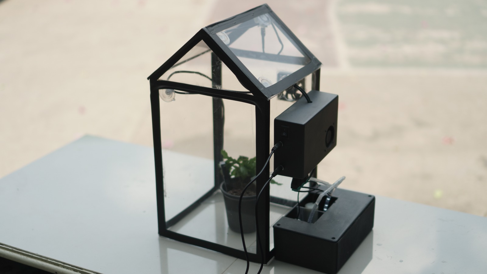
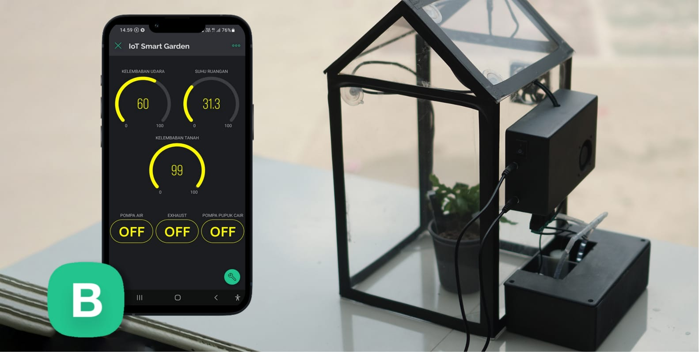
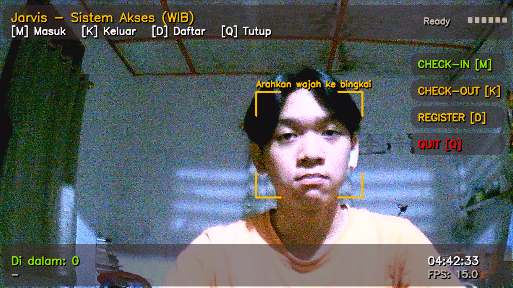

Projects Pilihan
Proyek-proyek nyata yang telah saya bangun, mencakup bidang IoT, Artificial Intelligence, dan Web Development.


Smart Garden Monitoring & Control System
Sistem pemantauan dan pengendalian kebun cerdas berbasis IoT yang memungkinkan monitoring kondisi lingkungan tanaman secara real-time lewat aplikasi Blynk. Mengukur suhu, kelembaban tanah, dan kelembaban udara dengan kontrol aktuator jarak jauh.
Full developer — perancangan skematik hardware, pengembangan firmware mikrokontroler, integrasi multi-sensor, dan konfigurasi dashboard Blynk.


IoT Water Quality Monitoring System
Sistem pemantauan kualitas air berbasis IoT yang mengukur tiga parameter kritis secara real-time: pH (keasaman), TDS (padatan terlarut), dan Turbidity (kekeruhan). Data dikirimkan ke cloud dashboard untuk pemantauan jarak jauh yang akurat.
IoT Engineer — koneksi sensor ke mikrokontroler ESP32 dan transmisi data real-time ke cloud via protokol MQTT.


Diabetes Early Detection System
Sistem deteksi dini risiko diabetes yang memadukan Machine Learning dan IoT untuk menganalisis parameter biometrik secara non-invasif. Model ML memproses data sensor IoT untuk memprediksi risiko diabetes dan memberikan rekomendasi kesehatan real-time.
IoT Engineer — perancangan perangkat keras (skematik & PCB), desain logika pengukuran sensor biometrik, dan integrasi data IoT ke pipeline Machine Learning.


IoT-Based Smart Room Monitoring System
Sistem monitoring ruangan cerdas yang memadukan IoT dan Face Recognition AI untuk mendeteksi serta menghitung jumlah okupansi ruangan secara real-time. Data ditampilkan melalui dashboard monitoring terpusat untuk meningkatkan efisiensi penggunaan ruangan.
Bertanggung jawab atas seluruh bagian IoT: perancangan dan perakitan hardware sensor, pemrograman firmware ESP32, serta integrasi pengiriman data real-time dari perangkat IoT ke sistem dashboard via protokol MQTT/HTTP.